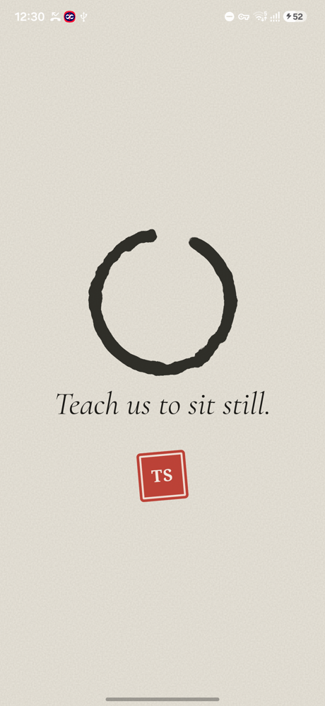
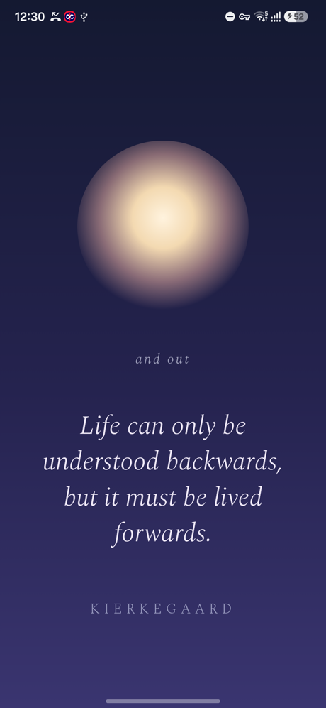
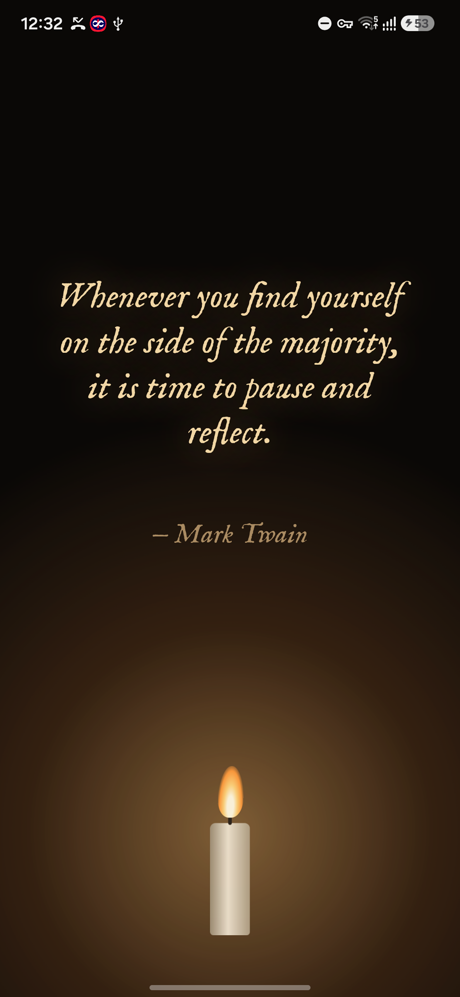
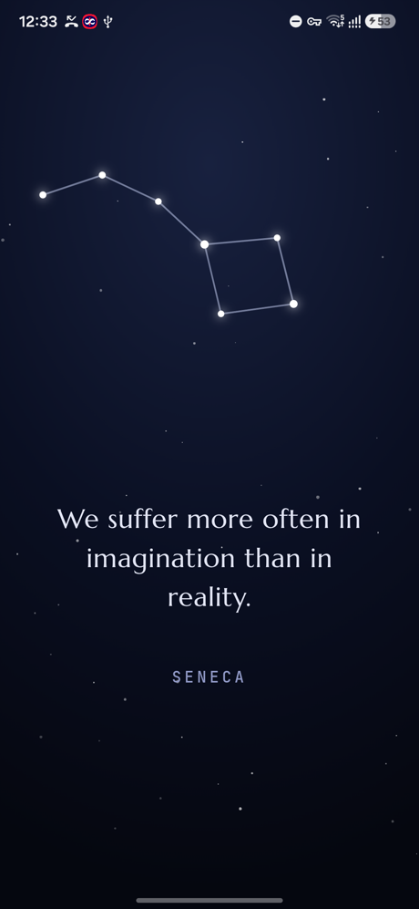

Real frames from the app. The feed behind it is a stand-in, not anyone's actual timeline.
You open a feed for one thing, and twenty minutes go missing
Viraam notices, waits for the gap between two reels, quietly mutes the sound, and fills the screen with one line worth reading. A few seconds later it fades by itself and you carry on.
There is nothing to tap and nothing to dismiss. No streaks, no scores, no weekly report telling you off. The only thing you can do is press and hold to keep a line you liked.
It picks its moment, not a timer
A hidden drift level fills while you scroll feed apps, faster when you are swiping quickly, and drains when you chat, use maps or put the phone down. When it passes a tipping point — set a little differently every time, so you cannot learn to expect it — the next swipe is the moment.
It holds off completely during calls, while you are typing, when the phone is sideways or locked, and it respects quiet hours, a daily limit, and at least twenty minutes between pauses. You choose which apps count.
Seven looks, each with its own quiet sound




InkRice paper, a brush circle drawn in one stroke, the line written out, a red seal.
BreathThe screen dims and a warm light breathes while the words arrive one at a time.
FrostThe glass fogs with your feed blurred behind it, then drops run down and it clears.
RippleA drop falls into still water and the line surfaces with its reflection.
CandleEverything goes dark and one flame lights the words.
DriftA single leaf falls, swaying, and the lines appear in its wake.
StarsA night sky, stars joining into a constellation, dawn washing them away.
A singing bowl, soft wind, real rain, a water drop, a crackling wick, a breeze, glass chimes. Everything is generated in the app except one rain recording. It never shows the same look twice in a row.
Your words
A hundred lines to begin with, mostly English: Marcus Aurelius, Seneca, Lao Tzu, Zhuangzi, Bashō, Thoreau, Emerson, Dickinson, Blake, Pascal, Wilde, Twain. Choose the kinds you want — poetry, stoic, zen and tao, nature, reflection, wit — and add your own lines.
Hindi, Sanskrit, Bengali, Punjabi and Tamil are there if you want them, switched off until you ask, with the English meaning underneath and proper lettering for each script.
What it can and cannot see
No internet permission at all. The app has no way to send anything anywhere, even by mistake.
It cannot read your screen. The accessibility service is declared with screen reading off, so it receives the name of the app in front and the fact that a scroll happened. Nothing else.
Nothing is collected. No accounts, no analytics, no crash reporting, no third-party code of any kind.
Your lines stay on the phone. Android backups are switched off; there is a Save a copy button if you want a file.
The easy way: install Obtainium, tap Add App, and paste https://github.com/golgames1/viraam. It installs Viraam and keeps it updated.
Or download it: take the file from Releases and open it.
If Android says "App blocked to protect your device" — that is Play Protect refusing apps that use the accessibility permission when they arrive through a browser, and it is not about this app in particular. Either install through Obtainium, or open Play Store → your picture → Play Protect → settings → turn off scanning for a minute while you install.
Then open Viraam, go through the three setup screens, and switch it on where Android asks.